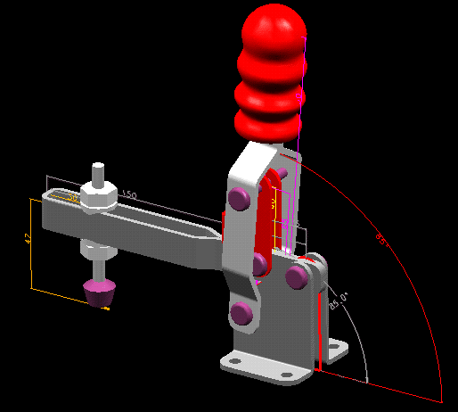

This VGx example shows how a 2d sketch can be used to drive a Solid Assembly.
Model file :- VGx_vignettes.mf*



Tech Tips
Talk about the ability to very quickly create 2d mechanisms with VGx and then links this playout part to drive a solid assembly.